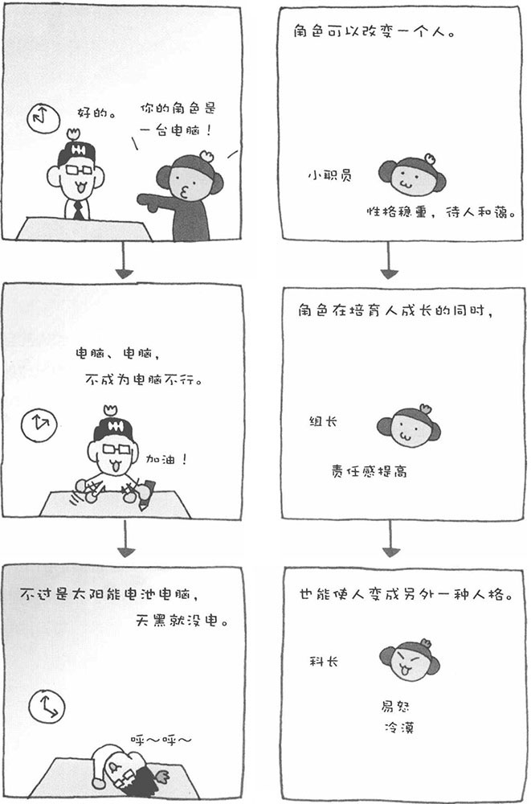

在公司中您是否有过这样的经历呢？本来一位很和蔼的前辈，自从他升任科长之后就突然变得很严厉了。也就是说，他的角色转变了，人也跟着改变了。这里说的角色，是指在社会生活中承担的责任和发挥的作用。实际上，这个所谓的"角色"是非常恐怖的。当人置身于某个角色时，本来"应该这样"的事情，却变成了"不这样不行"，给人带来很大的精神压力。为了让别人认可自己所担当的角色，人有时会超越自己的原则和价值观，甚至变成另外一种人格。可以说，人会积极地采取一些行为使自己更加适合当前的地位或角色。
2001年拍摄的电影《ES》，实际是以美国斯坦福大学心理学系的研究人员进行的一个角色实验为脚本的。在电影中，将公开招募的人分成两组，让一组人扮演看守所的狱警，而另一组人则扮演被看管的犯人。这些人被安排在一个模拟看守所中，而实验的目的是研究角色会对人的行为取向造成怎样的影响。实验开始后，扮演狱警的人变得具有攻击性，而扮演囚犯的人则变得顺从。随着实验的进行，受验者的行为逐渐升级，最终发展到无法控制的地步。这一电影作品告诉我们，人所扮演的角色对人的行为会造成很大的影响。
在日本，有一位专门研究儿童集体心理的学者田中熊次，他曾经以小学五年级的学生为对象进行过类似的实验。他让小学生轮流扮演学习委员的角色，结果发现孩子们为了让自己适合学习委员的角色，都变得非常努力。当孩子们身上具备角色性格之后，就会受到周围的表扬，从而更加激励他们努力学习，形成一个良性循环。因此，社会角色在具有很大危险性的同时，也可以激励我们更快成长。
